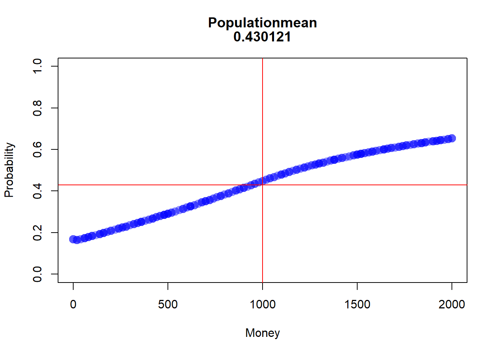
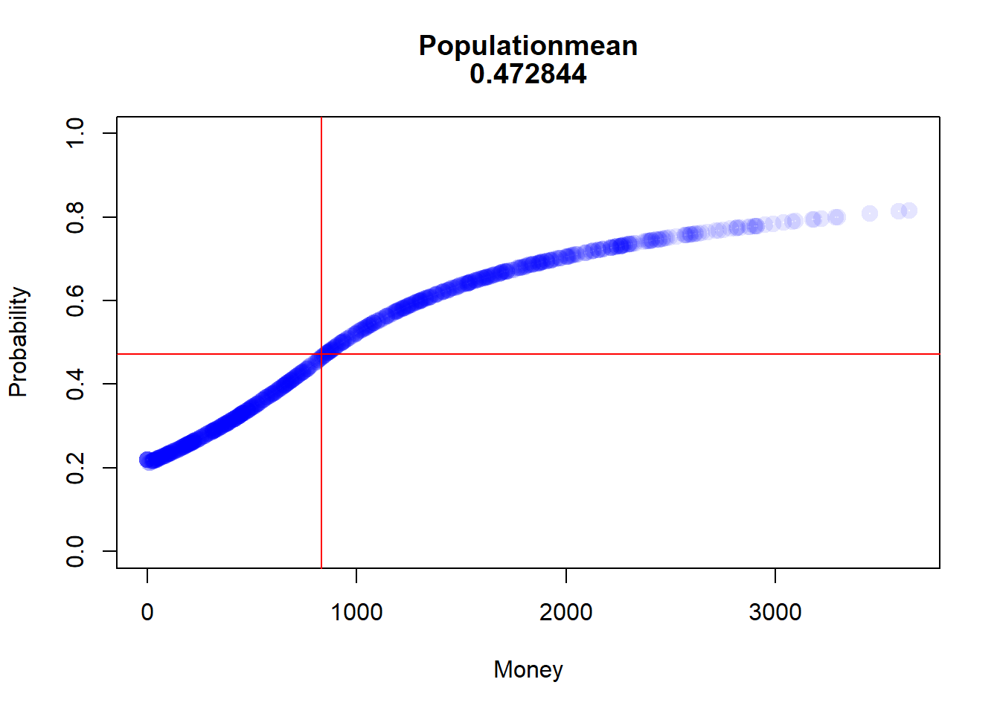

ID nE Ms MT Me
Min. : 1.0 Min. :30 Min. : -37.88 Min. :1014 Min. :1014
1st Qu.: 250.8 1st Qu.:30 1st Qu.: 806.68 1st Qu.:1014 1st Qu.:1014
Median : 500.5 Median :30 Median :1016.58 Median :1014 Median :1014
Mean : 500.5 Mean :30 Mean :1014.29 Mean :1014 Mean :1014
3rd Qu.: 750.2 3rd Qu.:30 3rd Qu.:1215.53 3rd Qu.:1014 3rd Qu.:1014
Max. :1000.0 Max. :30 Max. :2049.86 Max. :1014 Max. :1014
the restriction that everyone finds an change partner at the same time will be lifted. In addition, the number and order of changes will also be removed.
Code
SplitHalve2<-function(nAgent,maxExchange,Money_mean=1000,Money_sd=300){df<-data.frame(ID=seq(1,nAgent), nE=0, Ms=rnorm(nAgent, mean =Money_mean, sd =Money_sd), MT=0,Me=0)df$Me<-df$MsiE<-1while(iE<=maxExchange){df$MT<-df$Merdf<-sample(df$ID, size=2)df[(df$ID==rdf[1]|df$ID==rdf[2]),"nE"]<-df[(df$ID==rdf[1]|df$ID==rdf[2]),"nE"]+1df[(df$ID==rdf[1]|df$ID==rdf[2]),"Me"]<-sum(df[(df$ID==rdf[1]|df$ID==rdf[2]),"MT"])/2iE<-iE+1}return(df)}
ID nE Ms MT
Min. : 1.0 Min. :16 Min. : -46.16 Min. :994.9
1st Qu.: 250.8 1st Qu.:26 1st Qu.: 779.75 1st Qu.:995.6
Median : 500.5 Median :30 Median : 991.46 Median :995.7
Mean : 500.5 Mean :30 Mean : 995.70 Mean :995.7
3rd Qu.: 750.2 3rd Qu.:34 3rd Qu.:1212.24 3rd Qu.:995.8
Max. :1000.0 Max. :47 Max. :2107.43 Max. :997.0
Me
Min. :994.9
1st Qu.:995.6
Median :995.7
Mean :995.7
3rd Qu.:995.8
Max. :997.0
ID nE Ms MT
Min. : 1.0 Min. :15 Min. : 119.1 Min. : 0.0
1st Qu.: 250.8 1st Qu.:26 1st Qu.: 803.9 1st Qu.: 299.2
Median : 500.5 Median :30 Median : 996.0 Median : 690.7
Mean : 500.5 Mean :30 Mean :1000.2 Mean :1000.2
3rd Qu.: 750.2 3rd Qu.:34 3rd Qu.:1197.8 3rd Qu.:1361.5
Max. :1000.0 Max. :51 Max. :1994.2 Max. :6565.6
Me
Min. : 0.0
1st Qu.: 299.2
Median : 691.6
Mean :1000.2
3rd Qu.:1357.2
Max. :6565.6
ID nE Ms MT
Min. : 1.0 Min. :13 Min. : 55.18 Min. : 298.8
1st Qu.: 250.8 1st Qu.:26 1st Qu.: 785.83 1st Qu.: 732.5
Median : 500.5 Median :30 Median : 977.53 Median : 937.5
Mean : 500.5 Mean :30 Mean : 985.86 Mean : 985.9
3rd Qu.: 750.2 3rd Qu.:33 3rd Qu.:1194.89 3rd Qu.:1202.6
Max. :1000.0 Max. :49 Max. :1923.52 Max. :2756.2
Me
Min. : 298.8
1st Qu.: 732.3
Median : 937.5
Mean : 985.9
3rd Qu.:1202.6
Max. :2756.2
On closer inspection, however, this does not help to understand the problem.
Back to a more restrictive Simulation
That’s why I’m going back to my more restrictive Simulation where everyone has to have a meeting first so that someone can have a second meeting. This should help to understand how the timing of the meetings could have an influence…
Code
SplitRandomR<-function(nAgent,maxExchange,Money_mean=1000,Money_sd=300){df<-data.frame(ID=seq(1,nAgent), nE=0, Ms=rnorm(nAgent, mean =Money_mean, sd =Money_sd), MT=0,Me=0)df$Me<-df$MsiE<-1while(iE<=maxExchange){df$MT<-df$Merdf<-sample(df[df$nE<iE,"ID"], size=2)rds<-sample(0:100, size=1)/100df[(df$ID==rdf[1]|df$ID==rdf[2]),"nE"]<-df[(df$ID==rdf[1]|df$ID==rdf[2]),"nE"]+1df[(df$ID==rdf[1]|df$ID==rdf[2]),"Me"]<-sum(df[(df$ID==rdf[1]|df$ID==rdf[2]),"MT"])*c(rds,1-rds)if(NROW(df[df$nE<iE,"ID"])<2){iE<-iE+1}}return(df)}
ID nE Ms MT
Min. : 1.0 Min. :30 Min. : -6.583 Min. : 0.0
1st Qu.: 250.8 1st Qu.:30 1st Qu.: 784.234 1st Qu.: 280.6
Median : 500.5 Median :30 Median : 990.719 Median : 651.0
Mean : 500.5 Mean :30 Mean : 975.880 Mean : 975.9
3rd Qu.: 750.2 3rd Qu.:30 3rd Qu.:1171.659 3rd Qu.:1358.7
Max. :1000.0 Max. :30 Max. :1906.833 Max. :8596.2
Me
Min. : 0.0
1st Qu.: 280.6
Median : 649.9
Mean : 975.9
3rd Qu.:1362.6
Max. :8596.2
I think the easiest way to understand the mechanism is to have all agents start with the same amount of money. I will do this here quick and durty with my restrictive simulation and a starting distribution with a mean of 1000 and a standard deviation of 0.
First Exchange
In the first run in this simplified scenario, all agents have the same chance of being above or below 1000.
In other words, the average value of Money is still 1000. Also the Median. So there should be about 50% agents with more than 1000
Code
df1_summary<-data.frame("Mean"=mean(df1_even$Me),"Median"=median(df1_even$Me),"nAover1000"=nrow(df1_even[df1_even$Me>1000,]))# number of Agents with more than 1000df1_summary
Mean Median nAover1000
1 1000 1000 496
Second Exchange
But what happens now with the second swap!
to get above 1000 or to stay there you “need†two conditions:
you have to meet someone who has over 1000 (p~0.5)
you must also emerge from the meeting as the winner (p~0.5)
The chance of staying or getting above 1000 is only around 25%.
I know this isn’t formally correct, but it should explain the mechanism!
The real value should be under 50% (see conclusion)
after the second round, the mean value is still 1000, but the median is now lower!
Code
df2_summary<-data.frame("Mean"=mean(df2_even$Me),"Median"=median(df2_even$Me),"nAover1000"=nrow(df2_even[df2_even$Me>1000,]))# number of Agents with more than 1000df2_summary
Mean Median nAover1000
1 1000 823.8 423
in other words, meeting someone who has over 1000 is now even smaller for the next round.
As assumed, the median is again smaller, as is the number of agents with more than 1000
Code
df3_summary<-data.frame("Mean"=mean(df3_even$Me),"Median"=median(df3_even$Me),"nAover1000"=nrow(df3_even[df3_even$Me>1000,]))# number of Agents with more than 1000df3_summary
Mean Median nAover1000
1 1000 784.574 401
from here on it seems clear that it tends towards the distribution with further steps
Conclusion
I must have made something like a conjunction error here. the conditional probability for winning of 50% is only given if everyone has the same amount of money. Otherwise the chance of getting over the Median of the distribusion is always smaller (conjunction of two probability’s), which means that there are more and more poor and only a few rich agents in this game.
Before the first Exchange it should be 0.5 for all Agents
Code
prob_start<-win_stab_prob(df1_even$Ms)[, 2]plot(prob_start, type ="l", lwd =5, main="Getting over the Median", xlab="ID", ylab="Probability", ylim=c(0,1), col=rgb(0,0,1,1),)
after that first round it depends from the Money of the Agent.
Code
prob_after1<-win_stab_prob(df1_even$Me)prob_after1<-prob_after1[order(prob_after1$Money, decreasing =FALSE), ]popMean<-mean(prob_after1[, 2])Money_Med<-median(prob_after1[, 1])plot(prob_after1, lwd =5, main=c("Populationmean", popMean), xlab="Money", ylab="Probability", ylim=c(0,1), col=rgb(0,0,1,0.1))abline(h=popMean, col =rgb(1,0,0,1))abline(v=Money_Med, col =rgb(1,0,0,1))

after the second round
Code
prob_after2<-win_stab_prob(df2_even$Me)prob_after2<-prob_after2[order(prob_after2$Money, decreasing =FALSE), ]popMean<-mean(prob_after2[, 2])Money_Med<-median(prob_after2[, 1])plot(prob_after2, lwd =5, main=c("Populationmean", popMean), xlab="Money", ylab="Probability", ylim=c(0,1), col=rgb(0,0,1,0.1))abline(h=popMean, col =rgb(1,0,0,1))abline(v=Money_Med, col =rgb(1,0,0,1))

… third
Code
prob_after3<-win_stab_prob(df3_even$Me)prob_after3<-prob_after3[order(prob_after3$Money, decreasing =FALSE), ]popMean<-mean(prob_after3[, 2])Money_Med<-median(prob_after3[, 1])plot(prob_after3, lwd =5, main=c("Populationmean", popMean), xlab="Money", ylab="Probability", ylim=c(0,1), col=rgb(0,0,1,0.1))abline(h=popMean, col =rgb(1,0,0,1))abline(v=Money_Med, col =rgb(1,0,0,1))
…15th
Code
df15_even<-SplitRandomR(1000,15,1000,0)prob_after15<-win_stab_prob(df15_even$Me)prob_after15<-prob_after15[order(prob_after15$Money, decreasing =FALSE), ]popMean<-mean(prob_after15[, 2])Money_Med<-median(prob_after15[, 1])plot(prob_after15, lwd =5, main=c("Populationmean", popMean), xlab="Money", ylab="Probability", ylim=c(0,1), col=rgb(0,0,1,0.1))abline(h=popMean, col =rgb(1,0,0,1))abline(v=Money_Med, col =rgb(1,0,0,1))
---title: "Sketchbook"author: "Hubert Baechli"---# My first attemptat an agent model with the information from the lesson```{r}SplitHalve <-function (nAgent, maxExchange, Money_mean=1000, Money_sd=300) { df <-data.frame(ID=seq(1,nAgent),nE=0,Ms=rnorm(nAgent, mean = Money_mean, sd = Money_sd),MT=0,Me=0) df$Me <- df$Ms iE <-1while (iE <= maxExchange) { df$MT <- df$Me rdf <-sample(df[df$nE < iE,"ID"], size=2) df[(df$ID == rdf[1] | df$ID == rdf[2]),"nE"] <- df[(df$ID == rdf[1] | df$ID == rdf[2]),"nE"]+1 df[(df$ID == rdf[1] | df$ID == rdf[2]),"Me"] <-sum(df[(df$ID == rdf[1] | df$ID == rdf[2]),"MT"])/2if (NROW(df[df$nE < iE,"ID"]) <2) { iE <- iE+1 } }return(df)}```Presentation of the results```{r}df <-SplitHalve(1000,30)summary(df)hist(df$Ms, xlab="Money",main="Histogram for split-halve",col=rgb(0,0,1,0.2),xlim=c(0,max(c(df$Me,df$Ms)*1.1)),ylim=c(0,nrow(df)/2))hist(df$Me, col=rgb(0,1,0,0.2),add=TRUE)legend('topright', c('Money befor', 'Money after'),fill=c(rgb(0,0,1,0.5), rgb(0,1,0,0.2)))plot(df$ID,df$nE,main="Number of Changes",xlab="ID",ylab="Number of Changes",col=rgb(1,0,0,0.2))```After looking at the code on <https://github.com/norvig/pytudes/blob/main/ipynb/Economics.ipynb#js-repo-pjax-container> there are some differences between my idea and the paper! These will now be adapted step by step.## First of all,the restriction that everyone finds an change partner at the same time will be lifted. In addition, the number and order of changes will also be removed.```{r}SplitHalve2 <-function(nAgent,maxExchange,Money_mean=1000,Money_sd=300) { df <-data.frame(ID=seq(1,nAgent),nE=0,Ms=rnorm(nAgent, mean = Money_mean, sd = Money_sd),MT=0,Me=0) df$Me <- df$Ms iE <-1while (iE <= maxExchange) { df$MT <- df$Me rdf <-sample(df$ID, size=2) df[(df$ID == rdf[1] | df$ID == rdf[2]),"nE"] <- df[(df$ID == rdf[1] | df$ID == rdf[2]),"nE"]+1 df[(df$ID == rdf[1] | df$ID == rdf[2]),"Me"] <-sum(df[(df$ID == rdf[1] | df$ID == rdf[2]),"MT"])/2 iE <- iE+1 }return(df)}```Presentation of the results```{r}df <-SplitHalve2(1000,15000)summary(df)hist(df$Ms, xlab="Money",main="Histogram for split-halve",col=rgb(0,0,1,0.2),xlim=c(0,max(c(df$Me,df$Ms)*1.1))*1.1,ylim=c(0,nrow(df)/2))hist(df$Me, col=rgb(0,1,0,0.2),add=TRUE)legend('topright', c('Money befor', 'Money after'),fill=c(rgb(0,0,1,0.5), rgb(0,1,0,0.2)))plot(df$ID,df$nE,main="Number of Changes",xlab="ID",ylab="Number of Changes",col=rgb(1,0,0,0.2))```## The next stepis to change from a half-split to a random-split. In the hope that this can reflect the results of the paper```{r}SplitRandom <-function(nAgent,maxExchange,Money_mean=1000,Money_sd=300) { df <-data.frame(ID=seq(1,nAgent),nE=0,Ms=rnorm(nAgent, mean = Money_mean, sd = Money_sd),MT=0,Me=0) df$Me <- df$Ms iE <-1while (iE <= maxExchange) { df$MT <- df$Me rdf <-sample(df$ID, size=2) rds <-sample(0:100, size=1)/100 df[(df$ID == rdf[1] | df$ID == rdf[2]),"nE"] <- df[(df$ID == rdf[1] | df$ID == rdf[2]),"nE"]+1 df[(df$ID == rdf[1] | df$ID == rdf[2]),"Me"] <-sum(df[(df$ID == rdf[1] | df$ID == rdf[2]),"MT"])*c(rds,1-rds) iE <- iE+1 }return(df)}```### I am very surprised!here are the results for the random-split```{r}df <-SplitRandom(1000,15000)summary(df)hist(df$Ms, xlab="Money",main="Histogram for split-random",col=rgb(0,0,1,0.2),xlim=c(0,max(c(df$Me,df$Ms)*1.1)),ylim=c(0,nrow(df)/2))hist(df$Me, col=rgb(0,1,0,0.2),add=TRUE)legend('topright', c('Money befor', 'Money after'),fill=c(rgb(0,0,1,0.5), rgb(0,1,0,0.2)))plot(df$ID,df$nE,main="Number of Changes",xlab="ID",ylab="Number of Changes",col=rgb(1,0,0,0.2))```# But why??????????there seems to be no correlation to the number of meetings, to the money at the beginning or the ID (position in the matrix)```{r}plot(df$nE,df$Me,main="Correlation to the Number of Changes",xlab="Number of Changes",ylab="Money at the End",col=rgb(1,0,0,0.2))plot(df$Ms,df$Me,main="Correlation to the Money at the Beginning",xlab="Money at the Beginning",ylab="Money at the End",col=rgb(1,0,0,0.2))plot(df$ID,df$Me,main="Correlation to the ID",xlab="ID",ylab="Money at the End",col=rgb(1,0,0,0.2))```## Idea from a proverbcan it be that it is harder to get money back once you have lost all the money *“money goes to money”*?as a first attempt, the random function is limited between 30% and 70%```{r}SplitRandom2 <-function(nAgent,maxExchange,Money_mean=1000,Money_sd=300) { df <-data.frame(ID=seq(1,nAgent),nE=0,Ms=rnorm(nAgent, mean = Money_mean, sd = Money_sd),MT=0,Me=0) df$Me <- df$Ms iE <-1while (iE <= maxExchange) { df$MT <- df$Me rdf <-sample(df$ID, size=2) rds <-sample(30:70, size=1)/100 df[(df$ID == rdf[1] | df$ID == rdf[2]),"nE"] <- df[(df$ID == rdf[1] | df$ID == rdf[2]),"nE"]+1 df[(df$ID == rdf[1] | df$ID == rdf[2]),"Me"] <-sum(df[(df$ID == rdf[1] | df$ID == rdf[2]),"MT"])*c(rds,1-rds) iE <- iE+1 }return(df)}```the distribution seems to remain the same as the results here show,```{r}df <-SplitRandom2(1000,15000)summary(df)hist(df$Ms, xlab="Money",main="Histogram for split-random (30%-70%)",col=rgb(0,0,1,0.2),xlim=c(0,max(c(df$Me,df$Ms)*1.1)),ylim=c(0,nrow(df)/2))hist(df$Me, col=rgb(0,1,0,0.2),add=TRUE)legend('topright', c('Money befor', 'Money after'),fill=c(rgb(0,0,1,0.5), rgb(0,1,0,0.2)))```On closer inspection, however, this does not help to understand the problem.## Back to a more restrictive SimulationThat's why I'm going back to my more restrictive Simulation where everyone has to have a meeting first so that someone can have a second meeting. This should help to understand how the timing of the meetings could have an influence...```{r}SplitRandomR <-function(nAgent,maxExchange,Money_mean=1000,Money_sd=300) { df <-data.frame(ID=seq(1,nAgent),nE=0,Ms=rnorm(nAgent, mean = Money_mean, sd = Money_sd),MT=0,Me=0) df$Me <- df$Ms iE <-1while (iE <= maxExchange) { df$MT <- df$Me rdf <-sample(df[df$nE < iE,"ID"], size=2) rds <-sample(0:100, size=1)/100 df[(df$ID == rdf[1] | df$ID == rdf[2]),"nE"] <- df[(df$ID == rdf[1] | df$ID == rdf[2]),"nE"]+1 df[(df$ID == rdf[1] | df$ID == rdf[2]),"Me"] <-sum(df[(df$ID == rdf[1] | df$ID == rdf[2]),"MT"])*c(rds,1-rds)if (NROW(df[df$nE < iE,"ID"]) <2) { iE <- iE+1 } }return(df)}```Time does not seem to have any effect either```{r}df <-SplitRandomR(1000,30)summary(df)hist(df$Ms, xlab="Money",main="Histogram for split-random Restricted",col=rgb(0,0,1,0.2),xlim=c(0,max(c(df$Me,df$Ms)*1.1)),ylim=c(0,nrow(df)/2))hist(df$Me, col=rgb(0,1,0,0.2),add=TRUE)legend('topright', c('Money befor', 'Money after'),fill=c(rgb(0,0,1,0.5), rgb(0,1,0,0.2)))plot(df$ID,df$nE,main="Number of Changes",xlab="ID",ylab="Number of Changes",col=rgb(1,0,0,0.2))```**But still why???**I think I need a simulation where I can save the money history!## Simple Timehistory### After the first change for all Agents```{r}df <-SplitRandomR(1000,1)hist(df$Ms, xlab="Money",main="Histogram for split-random Restricted",col=rgb(0,0,1,0.2),xlim=c(0,max(c(df$Me,df$Ms))*1.1),ylim=c(0,nrow(df)/2))hist(df$Me, col=rgb(0,1,0,0.2),add=TRUE)legend('topright', c('Money befor', 'Money after'),fill=c(rgb(0,0,1,0.5), rgb(0,1,0,0.2)))```### After the second change for all Agents```{r}df <-SplitRandomR(1000,2)hist(df$Ms, xlab="Money",main="Histogram for split-random Restricted",col=rgb(0,0,1,0.2),xlim=c(0,max(c(df$Me,df$Ms)))*1.1,ylim=c(0,nrow(df)/2))hist(df$Me, col=rgb(0,1,0,0.2),add=TRUE)legend('topright', c('Money befor', 'Money after'),fill=c(rgb(0,0,1,0.5), rgb(0,1,0,0.2)))```# Eureka!**Sleeping on it always helps!**I think the easiest way to understand the mechanism is to have all agents start with the same amount of money. I will do this here quick and durty with my restrictive simulation and a starting distribution with a mean of 1000 and a standard deviation of 0.## First ExchangeIn the first run in this simplified scenario, all agents have the same chance of being above or below 1000.```{r}df1_even <-SplitRandomR(1000,1,1000,0)hist(df1_even$Ms, xlab="Money",main="Histogram for split-random Restricted",col=rgb(0,0,1,0.2),xlim=c(0,max(c(df1_even$Me,df1_even$Ms))*1.1),ylim=c(0,nrow(df1_even)))hist(df1_even$Me, col=rgb(0,1,0,0.2),add=TRUE)legend('topright', c('Money befor', 'Money after'),fill=c(rgb(0,0,1,0.5), rgb(0,1,0,0.2)))```In other words, the average value of Money is still 1000. Also the Median. So there should be about 50% agents with more than 1000```{r}df1_summary <-data.frame("Mean"=mean(df1_even$Me),"Median"=median(df1_even$Me),"nAover1000"=nrow(df1_even[df1_even$Me>1000,])) # number of Agents with more than 1000df1_summary```## Second ExchangeBut what happens now with the second swap!to get above 1000 or to stay there you "need" two conditions:1. you have to meet someone who has over 1000 (p\~0.5)2. you must also emerge from the meeting as the winner (p\~0.5)The chance of staying or getting above 1000 is only around 25%.***I know this isn't formally correct, but it should explain the mechanism!*****The real value should be under 50% (see conclusion)**```{r}df2_even <-SplitRandomR(1000,2,1000,0)hist(df2_even$Ms, xlab="Money",main="Histogram for split-random Restricted",col=rgb(0,0,1,0.2),xlim=c(0,max(c(df2_even$Me,df2_even$Ms))*1.1),ylim=c(0,nrow(df2_even)))hist(df2_even$Me, col=rgb(0,1,0,0.2),add=TRUE)legend('topright', c('Money befor', 'Money after'),fill=c(rgb(0,0,1,0.5), rgb(0,1,0,0.2)))```after the second round, the mean value is still 1000, but the median is now lower!```{r}df2_summary <-data.frame("Mean"=mean(df2_even$Me),"Median"=median(df2_even$Me),"nAover1000"=nrow(df2_even[df2_even$Me>1000,])) # number of Agents with more than 1000df2_summary```in other words, meeting someone who has over 1000 is now even smaller for the next round.## Third Exchange```{r}df3_even <-SplitRandomR(1000,3,1000,0)hist(df3_even$Ms, xlab="Money",main="Histogram for split-random Restricted",col=rgb(0,0,1,0.2),xlim=c(0,max(c(df3_even$Me,df3_even$Ms))*1.1),ylim=c(0,nrow(df3_even)))hist(df3_even$Me, col=rgb(0,1,0,0.2),add=TRUE)legend('topright', c('Money befor', 'Money after'),fill=c(rgb(0,0,1,0.5), rgb(0,1,0,0.2)))```As assumed, the median is again smaller, as is the number of agents with more than 1000```{r}df3_summary <-data.frame("Mean"=mean(df3_even$Me),"Median"=median(df3_even$Me),"nAover1000"=nrow(df3_even[df3_even$Me>1000,])) # number of Agents with more than 1000df3_summary```from here on it seems clear that it tends towards the distribution with further steps# ConclusionI must have made something like a conjunction error here. the conditional probability for winning of 50% is only given if everyone has the same amount of money. Otherwise the chance of getting over the Median of the distribusion is always smaller (conjunction of two probability's), which means that there are more and more poor and only a few rich agents in this game.## Computing the Probability```{r}win_stab_prob <-function( Moneyvec ) { df <-data.frame(Money=Moneyvec,winprobability=0) MMA <-median(df[, 1])for(i in1:nrow(df)) { MA <- df[i,1] MoA <- df[c(-i),1] WP <- MoA*0for(ii in1:NROW(MoA)) { Sum_M <- MA + MoA[ii]if (Sum_M ==0) { WP[ii] <-1.00 } else { WP[ii] <- WP[ii] <-1-min(1, MMA/Sum_M) } } df[i,2] <-round(mean(WP), digits =3) }return(df)}```## TestingBefore the first Exchange it should be 0.5 for all Agents```{r}prob_start <-win_stab_prob(df1_even$Ms)[, 2]plot(prob_start,type ="l",lwd =5,main="Getting over the Median",xlab="ID",ylab="Probability",ylim=c(0,1),col=rgb(0,0,1,1),)```after that first round it depends from the Money of the Agent.```{r}prob_after1 <-win_stab_prob(df1_even$Me)prob_after1 <- prob_after1[order(prob_after1$Money, decreasing =FALSE), ]popMean <-mean(prob_after1[, 2])Money_Med <-median(prob_after1[, 1])plot(prob_after1,lwd =5,main=c("Populationmean", popMean),xlab="Money",ylab="Probability",ylim=c(0,1),col=rgb(0,0,1,0.1))abline(h=popMean,col =rgb(1,0,0,1))abline(v=Money_Med,col =rgb(1,0,0,1))```after the second round```{r}prob_after2 <-win_stab_prob(df2_even$Me)prob_after2 <- prob_after2[order(prob_after2$Money, decreasing =FALSE), ]popMean <-mean(prob_after2[, 2])Money_Med <-median(prob_after2[, 1])plot(prob_after2,lwd =5,main=c("Populationmean", popMean),xlab="Money",ylab="Probability",ylim=c(0,1),col=rgb(0,0,1,0.1))abline(h=popMean,col =rgb(1,0,0,1))abline(v=Money_Med,col =rgb(1,0,0,1))```... third```{r}prob_after3 <-win_stab_prob(df3_even$Me)prob_after3 <- prob_after3[order(prob_after3$Money, decreasing =FALSE), ]popMean <-mean(prob_after3[, 2])Money_Med <-median(prob_after3[, 1])plot(prob_after3,lwd =5,main=c("Populationmean", popMean),xlab="Money",ylab="Probability",ylim=c(0,1),col=rgb(0,0,1,0.1))abline(h=popMean,col =rgb(1,0,0,1))abline(v=Money_Med,col =rgb(1,0,0,1))```...15th```{r}df15_even <-SplitRandomR(1000,15,1000,0)prob_after15 <-win_stab_prob(df15_even$Me)prob_after15 <- prob_after15[order(prob_after15$Money, decreasing =FALSE), ]popMean <-mean(prob_after15[, 2])Money_Med <-median(prob_after15[, 1])plot(prob_after15,lwd =5,main=c("Populationmean", popMean),xlab="Money",ylab="Probability",ylim=c(0,1),col=rgb(0,0,1,0.1))abline(h=popMean,col =rgb(1,0,0,1))abline(v=Money_Med,col =rgb(1,0,0,1))```